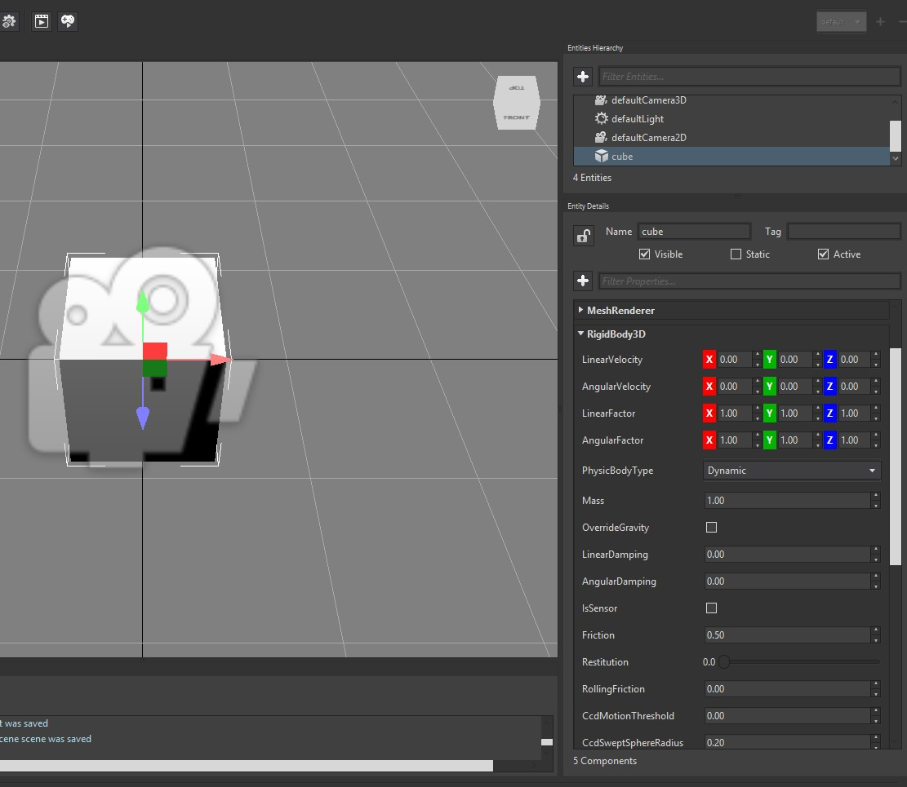

Goal
Nowadays, adding physic behaviour to our game is as immediate as adding a few lines of code. Wave Engine wraps low level physic components leveraging a simple API which follows the guidelines found all over the engine: component-based architecture, specific renderer for each drawable component, etc.
On the following paragraphs, we will learn how to add a rigid body physic capability to an entity, acting according to the world gravity.
Hands-on
Converting an entity into a physic object is particularly easy with Wave Engine. There are multiple forms of physic objects available, but here we will cover the most basic one: RigidBody3D. It can be found under WaveEngine.Framework.Physics3D namespace, where the rest of physic 3D capabilities are collected.
Wave Engine's 3D physics are based on Bullet Real-Time Physics Simulation, whose physic properties are bypassed to the first with the same meaning:
- Friction: _ used to make objects slide along each other realistically.
- Restitution: is used to make objects bounce. The restitution value is usually set to be between 0 and 1. Consider dropping a ball on a table. A value of zero means the ball won't bounce. This is called an inelastic collision. A value of one means the ball's velocity will be exactly reflected. This is called a perfectly elastic collision
- AngularDamping: expressed in radians, allow the entity to rotate during the physics computation happens
With Wave Visual Editor
Once you have a project opened, simply generate a new entity from top menu option Create, Primitives 3D and Cube; and add it a BoxCollider3D and a RigidBody3D component, modifying its properties to your liking:

With Visual Studio (for Windows or Mac)
Within the Shared Project, create a new Entity containing a cube:
var cube = new Entity("cube")
.AddComponent(new Transform3D())
.AddComponent(new MaterialComponent())
.AddComponent(new CubeMesh())
.AddComponent(new MeshRenderer())
.AddComponent(new RigidBody3D());
this.EntityManager.Add(cube);
The resulting execution will show a cube, which immediately falls down being accelerated by the gravity.
Wrap-up
We have learned where the 3D physic API is located inside Wave Engine. We have also introduced the RigidBody3D component, and some of the most used properties. Finally, we have created an Entity with this which behaves like a physic object.
Note
Take a look at Physics samples on github to see some samples using the power of Wave Engine Physics.